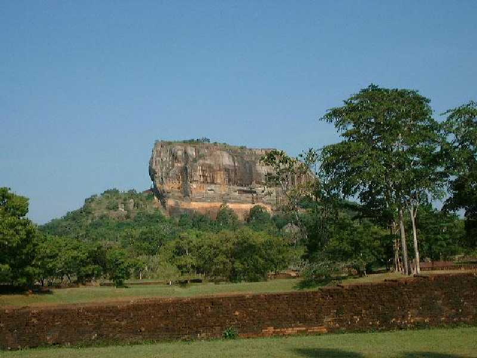
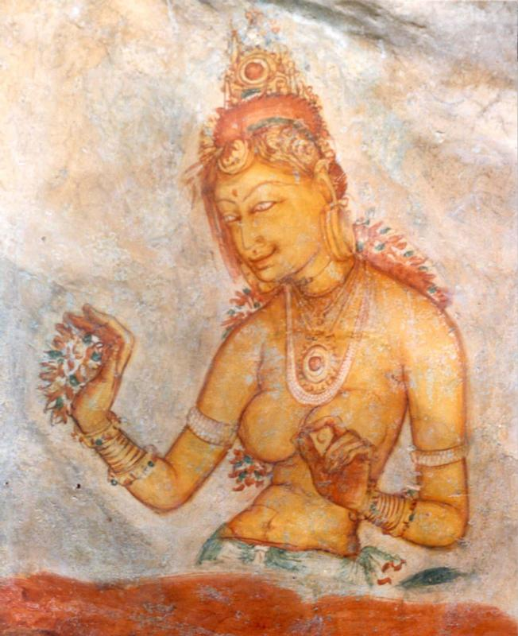

Sigiriya Rock Foress
スリランカ中央平原の中にある岩 ５世紀の昔その上に獅子の宮殿をカッサパ王が築いて１１年間王都として栄えた 周辺からは幾何学的な庭園や噴水のある街づくりが行われた遺跡が発掘されつつある

Sigiriya Fresco
岩壁に残る５世紀に描かれた１５体の天女達の絵はシギリヤレディーといわれ１,５００年前の絵とは思えないほど鮮やかに残っている ７世紀以降この天女と天空の宮殿に魅せられた人々が壁に落書きを残してきたが古代文字と文法の変化が読み取れるので他の遺跡の文字解読に役立っているというから落書きも捨てたものではない